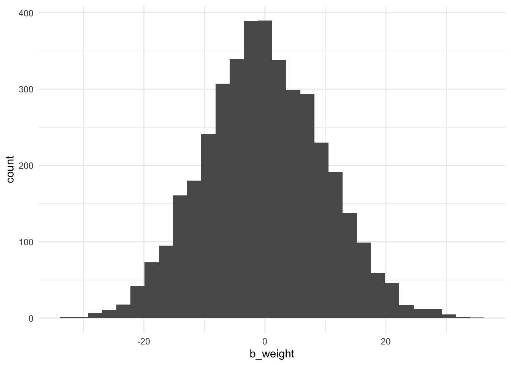
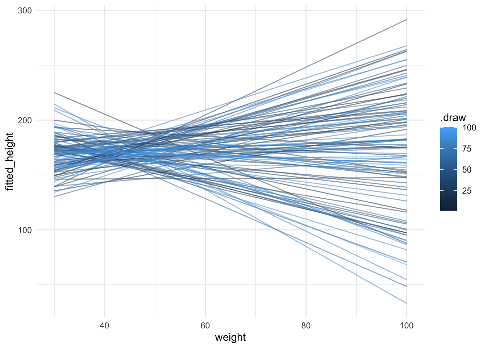
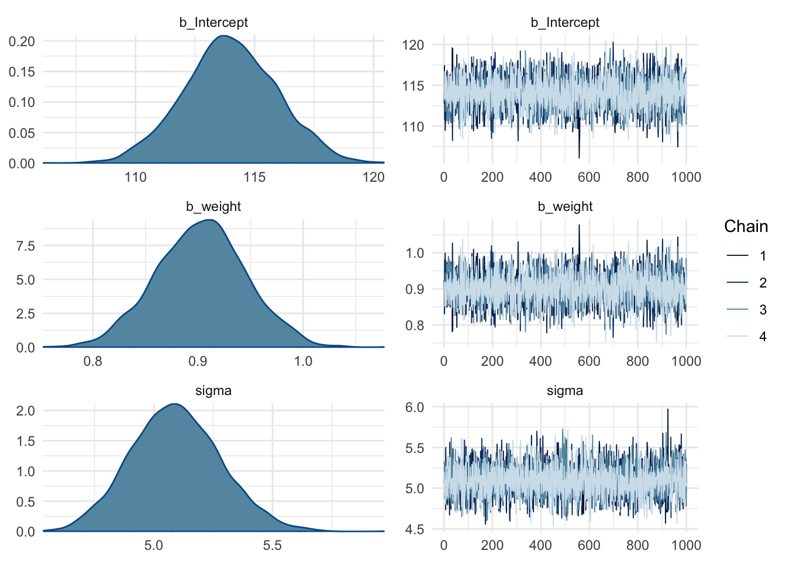
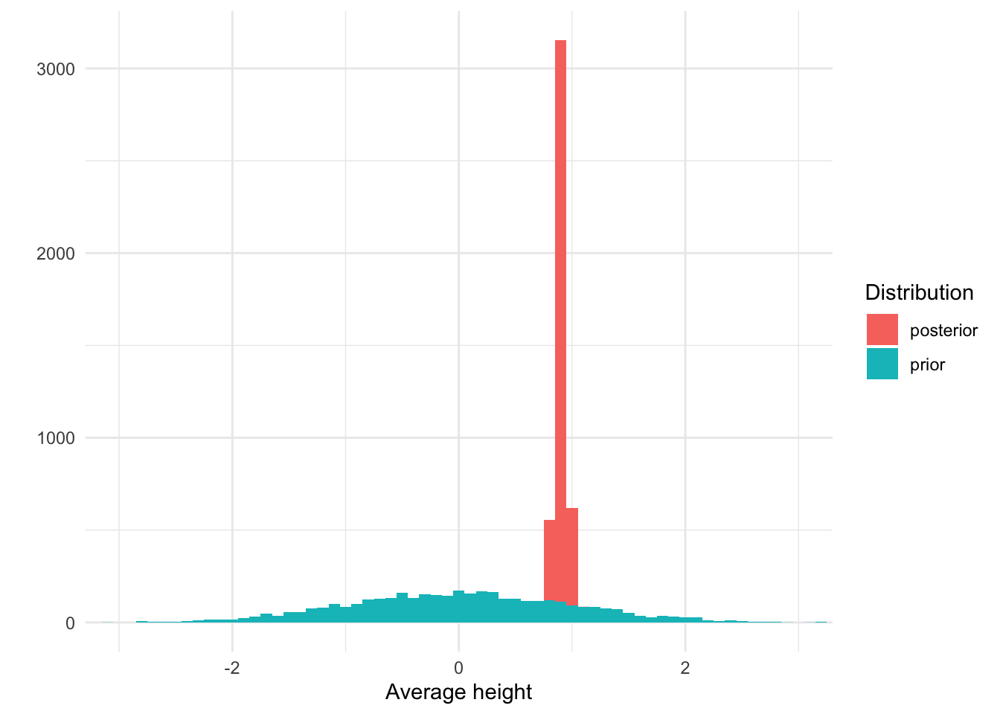

Bayesian statistics seems pretty cool, but I don’t really know how to apply it yet. In this blog post, I try to setup a Bayesian workflow that teaches both you and me how to do it.
Published
December 8, 2020
Code
# Load packageslibrary(tidyverse)library(viridis)library(knitr)library(brms)library(tidybayes)library(here)# Load datadata <-read_csv(here("data", "Howell1.csv"))# Set seedset.seed(4)# Set optionsoptions(knitr.kable.NA ="-", digits =2)theme_set(theme_minimal())
In this post, I am going to work out a workflow that I think makes sense for analyzing data using Bayesian statistics.
The data we will use to play with is the same data Richard McElreath uses in Chapter 4 of his amazing book called Statistical Rethinking. It is a dataset containing people’s height, weight, age, and sex. Just like in the book, we will focus only on people 18 years or older.
Code
# Only select people older than 18data <-filter(data, age >=18)# Show the first rowsdata %>%head() %>%kable(col.names =str_to_title(names(.)))
First 10 rows of the data
Height
Weight
Age
Male
152
48
63
1
140
36
63
0
137
32
65
0
157
53
41
1
145
41
51
0
164
63
35
1
The general idea behind Bayesian statistics is that you start with some beliefs about the topic of interest and then update those beliefs with the data. This means that when we want to analyze this data, we should actually start with our beliefs, rather than immediately jumping into running an analysis. In our particular case, we should construct a model that describes the different heights based on our a priori knowledge of people’s heights. In other words, we have to describe what we believe the heights to be. This is unlike what you have to do with frequentist statistics, so this part might be a bit tricky.
We will use the amazing brms package to both define and analyze our beliefs, as well as use the data to update those beliefs.
An intercept-only model
Let’s start with a simple intercept-only model to model people’s heights. The formula for this model is: height ~ 1.
With this formula and the data we can use brms to figure out which priors (i.e., beliefs) we need to set by running the get_prior() function.
This shows us that we need to set two priors, one for the Intercept and one for sigma. brms determined these priors automatically, but let’s take a look at them and see if they make sense to us.
The Intercept prior
The prior for the intercept indicates what we believe the average height to be.
brms has set the default Intercept prior as a Student t distribution with 3 degrees of freedom, a \(\mu\) of 154.3 and a \(\sigma\) of 8.5. That means brms starts off with a ‘belief’ that the average height is roughly normally distributed, with the most common average height being 154.3, but with quite some uncertainty. In fact, a Student t distribution has thick tails, especially compared to a normal distribution. This means that although you think the average height is most likely to be 154.3, you also think quite some other values are possible, even much smaller or much taller average heights.
But this is the default prior. brms determines this automatic prior by peeking at the data, which is not what we want to do. Instead, we should create our own.
So what do I believe the average height to be? As a Dutch person, I might be under the impression that the average height is around 175 centimeters. This is probably too tall for an average, as we’re known for being quite tall. So I think the average should be a bit lower than 175, perhaps 170. I am not very sure, though. After all, I am far from an expert on people’s heights; I am only using my layman knowledge here. As a result, an average of 165 seems possible to me too. So let’s describe my belief in the form of a distribution in which multiple averages are possible, to varying extents. We could use different types of distributions for this purpose. We could use a Student t distribution, but we can also use a normal distribution. We should use a Student t distribution with small degrees of freedom if we want to allow for the possibility of being very wrong (remember, it has thicker tails, so it covers a wider range of average heights). We’re not super uncertain about people’s heights, though, so let’s use a normal distribution.
Defining a normal distribution requires that we set the \(\mu\) and the \(\sigma\). The \(\mu\) we already covered (i.e., 170), so that leaves \(\sigma\). Let’s set this to 10 and see what happens by visualizing this prior. Below I plot both the default brms prior and our own.
Code
height_prior_intercept <-tibble(height_mean =seq(from =100, to =250, by =0.1),ours =dnorm(height_mean, mean =170, sd =10),default =dstudent_t(height_mean, df =30, mu =154.3, sigma =8.5),)height_prior_intercept <-pivot_longer( height_prior_intercept, cols =-height_mean, names_to ="prior") ggplot(height_prior_intercept, aes(x = height_mean, y = value, color = prior)) +geom_line(size =1) +labs(x ="Average height", y ="", color ="Prior") +scale_color_viridis(option ="mako", discrete =TRUE, begin = .25, end = .75 ) +scale_x_continuous(breaks =seq(100, 250, 20))
Two priors for \(\mu\) - brms’ default and my own
Our prior indicates that we believe the average height to be higher than the default prior. In terms of the standard deviation, we both seem to be about equally uncertain about this average. To be fair, I think this prior of ours is not very plausible. Apparently we assign quite a chunk of plausibility to an average of 180 cm, or even 190 cm, which is unlikely. An average of 160 cm is more plausible to me than an average of 180, so I should probably lower the mu, or use more of a skewed distribution. Regardless, we can keep it like this. We’ll see later that our data easily overshadows our prior.
The sigma prior
What about the standard deviation? I find setting the standard deviation of the distribution of heights (not the mean of the heights) quite difficult. There are parts that are easy, such as the fact that the standard deviation has to be 0 or larger (it can’t be negative), but exactly how large it should be, I don’t know.
I do know it is unlikely to be close to 0, and unlikely to be very large. That’s because I know people’s heights do vary, so it’s not likely close to be 0. I also know it’s not super large because we don’t see people who are taller than 2 meters very often. This means the peak should be somewhere above 0, with a tail to allow higher values but not too high. We can use a normal distribution for this with a mean above 0 and a particular standard deviation, and ignore everything that’s smaller than 0.
As I mentioned before, there is a downside of using a normal distribution, though. Normal distributions have long tails, but there is actually very little density in those tails. If we are quite uncertain about our belief about sigma, we should have thicker tails to indicate we believe those values are more plausible. One way to do this is by using a cauchy distribution. Cauchy distributions are like normal distributions, but with thicker tails. In fact, the cauchy distribution is a special case of the Student t distribution; they are equivalent if the degree of freedom is 1.
The cauchy distribution also requires two parameters: \(\mu\) and \(\sigma\). I set \(\mu\) to 5 and \(\sigma\) to 5 as well. Below I plot this prior and brms’s default prior.
Code
height_prior_sigma <-tibble(height_sigma =seq(from =0, to =50, by = .1),default =dstudent_t(height_sigma, df =3, mu =0, sigma =8.5) *2,ours =dstudent_t(height_sigma, df =1, mu =5, sigma =1) *2)height_prior_sigma <-pivot_longer( height_prior_sigma, cols =-height_sigma, names_to ="prior")ggplot(height_prior_sigma, aes(x = height_sigma, y = value, color = prior)) +geom_line(size =1) +labs(x ="Standard deviation of heights", y ="", color ="Prior") +scale_color_viridis(option ="mako", discrete =TRUE, begin = .25, end = .75 )
Two priors for \(\sigma\) - brms’ default and my own
As you can see, both distributions have long tails, allowing for the possibility of high standard deviations. There are some notable differences between the two priors. Our prior puts more weight on a standard deviation larger than 0, while the default prior believes a standard deviation of 0 is most likely. However, both priors are quite weak. We’ll see that the data easily overshadows these priors.
Before we run the analysis, we can also check the results of both our priors on the distribution of heights.
A prior predictive check
Before we run our model, we should check what the effect is of both priors combined. Because we have set the priors we can simulate what we believe the data to be. This is one way to see whether our priors actually make sense. It is called a prior predictive check.
We can use brms to do this by running the brm() function. However, instead of running the actual model, we tell it to only sample from the prior.
Code
model_height_prior <-brm( height ~1, data = data, family = gaussian,prior =c(prior(normal(170, 10), class ="Intercept"),prior(cauchy(5, 5), class ="sigma") ), cores =4,seed =4, sample_prior ="only",file ="models/model_height_prior.rds")
We then use the tidybayes package to draw samples from the prior and plot these draws.
So, our priors result in a normal distribution of heights ranging from about 125 cm to 225 cm. This looks pretty reasonable to me, so let’s run the model for real now.
Code
model_height <-brm(data = data, family = gaussian, height ~1,prior =c(prior(normal(170, 10), class ="Intercept"),prior(cauchy(5, 1), class ="sigma") ),cores =4,seed =4,sample_prior =TRUE,file ="models/model_height.rds")
Before we check the results, let’s first check whether the chains look good.
Code
plot(model_height)
It seems like they do. The distributions look normal and the chains look like caterpillars, which means they’re sampling from the distribution space and that’s what we want. This also shows us the posterior distributions of the two parameters, but let’s create our own graphs that compare both the prior and posterior distributions.
Code
results <- model_height %>%as_draws_df() %>%select(-lp__) %>%pivot_longer(cols =everything()) %>%mutate(parameter =if_else(str_detect(name, "sigma"), "sigma", "intercept"),distribution =if_else(str_detect(name, "prior"), "prior", "posterior"),distribution =fct_relevel(distribution, "prior") ) %>%select(-name)results_intercept <-filter(results, parameter =="intercept")results_sigma <-filter(results, parameter =="sigma")ggplot(results_intercept, aes(x = value, fill = distribution)) +geom_histogram(binwidth =0.5, position ="identity", alpha = .85) +coord_cartesian(xlim =c(145, 195)) +labs(x ="Average height", y ="", fill ="Distribution") +scale_fill_viridis(option ="mako", discrete =TRUE, begin = .25, end = .75)
Here we see that the posterior distribution of average heights is now much more narrow and centered around 156 cm.
Code
ggplot(results_sigma, aes(x = value, fill = distribution)) +geom_histogram(binwidth =0.25, position ="identity", alpha = .85) +coord_cartesian(xlim =c(0, 25)) +labs(x ="Height standard deviation", y ="", fill ="Distribution") +scale_fill_viridis(option ="mako", discrete =TRUE, begin = .25, end = .75)
Similarly, we see that the posterior for sigma is also much more narrow and around 7.75.
We can call up the estimates and the 95% confidence intervals by printing the model object.
Code
model_height
Family: gaussian
Links: mu = identity; sigma = identity
Formula: height ~ 1
Data: data (Number of observations: 352)
Draws: 4 chains, each with iter = 2000; warmup = 1000; thin = 1;
total post-warmup draws = 4000
Population-Level Effects:
Estimate Est.Error l-95% CI u-95% CI Rhat Bulk_ESS Tail_ESS
Intercept 154.63 0.41 153.83 155.40 1.01 3354 2418
Family Specific Parameters:
Estimate Est.Error l-95% CI u-95% CI Rhat Bulk_ESS Tail_ESS
sigma 7.72 0.29 7.18 8.32 1.00 3632 2741
Draws were sampled using sampling(NUTS). For each parameter, Bulk_ESS
and Tail_ESS are effective sample size measures, and Rhat is the potential
scale reduction factor on split chains (at convergence, Rhat = 1).
Our final step is to visualize the posterior distribution of all heights and compare it the distribution of heights based on our priors (the prior predictive check).
Code
ppc_posterior <-predicted_draws(object = model_height, newdata =tibble(.rows =1), value ="predicted_height")ppc_prior <-mutate(ppc_prior, distribution ="prior")ppc_posterior <-mutate(ppc_posterior, distribution ="posterior")ppc_height <-bind_rows(ppc_prior, ppc_posterior)ggplot(ppc_height, aes(x = predicted_height, fill = distribution)) +geom_histogram(binwidth =1, alpha = .85) +coord_cartesian(xlim =c(100, 250)) +labs(x ="Height", y ="", fill ="Distribution") +scale_fill_viridis(option ="mako", discrete =TRUE, begin = .25, end = .75)
Prior and posterior predictive check
Based on the data, we should now believe, after seeing the data, that people’s heights are lower than expected.
Adding a predictor
Let’s repeat the same steps but this time we add a predictor to the model. We’ll add weight as a predictor to see its relationship with height.
The formula becomes: height ~ 1 + weight.
So let’s see which priors we need to set for this model.
Code
get_prior(height ~1+ weight, data = data)
prior class coef group resp dpar nlpar lb ub
(flat) b
(flat) b weight
student_t(3, 154.3, 8.5) Intercept
student_t(3, 0, 8.5) sigma 0
source
default
(vectorized)
default
default
This time the output is a bit more confusing. We seem to have two additional priors: a default b prior and a vectorized b prior for the weight coefficient. The reason there are now two additional priors is that there are two different ways to specify a prior here. We can either set a specific prior for the weight coefficient, or set a prior on all the b-class priors. In this specific case, with only one additional predictor, it means we can use either technique and we only need to set one of them.
What should our prior for weight be? In other words, for every increase of 1 in weight, how much do we think this relates to an increase (or decrease) in height? This is likely to be a positive relationship (taller people are more likely to be heavier as well), but we can also refrain from indicating the direction. This means we can specify a distribution of possible effects, centered around 0. The only decision we’re left with is setting the standard deviation. Let’s try a value of 10 and see what this means.
Code
model_height_weight_prior <-brm( height ~1+ weight, data = data, family = gaussian,prior =c(prior(normal(170, 10), class ="Intercept"),prior(cauchy(5, 1), class ="sigma"),prior(normal(0, 10), coef ="weight") ),cores =4,seed =4, sample_prior ="only",file ="models/model_height_weight_prior.rds")
We can do our prior predictive checking in two different ways now. We can check only the effect of our prior on weight, or also include the prior on sigma.
In the former case, we use fitted_draws() to obtain draws from our posterior, like so:
Code
draws <-add_predicted_draws(tibble(weight =seq(30, 100, 1)), model_height_weight_prior,value ="fitted_height",ndraws =100) ggplot(draws, aes(x = weight, y = fitted_height, group = .draw)) +geom_line(alpha = .5)
`stat_bin()` using `bins = 30`. Pick better value with `binwidth`.

In both cases, we see that we get quite some implausible values. So let’s take a prior that produces fewer crazy observations, such as a prior of normal(0, 1).
Code
model_height_weight_prior2 <-brm( height ~1+ weight, data = data, family = gaussian,prior =c(prior(normal(170, 10), class ="Intercept"),prior(cauchy(5, 1), class ="sigma"),prior(normal(0, 1), coef ="weight") ),cores =4,seed =4, sample_prior ="only",file ="models/model_height_weight_prior2.rds")model_height_weight_prior2 %>%fitted_draws(tibble(weight =seq(30, 100, 1)), value ="fitted_height", n =100) %>%ggplot(aes(x = weight, y = fitted_height, color = .draw, group = .draw)) +geom_line(alpha = .5)
Warning: `fitted_draws` and `add_fitted_draws` are deprecated as their names were confusing.
Use [add_]epred_draws() to get the expectation of the posterior predictive.
Use [add_]linpred_draws() to get the distribution of the linear predictor.
For example, you used [add_]fitted_draws(..., scale = "response"), which
means you most likely want [add_]epred_draws(...).

That looks much better. It could still be refined because it produces several highly implausible results, but let’s stick with this for now and run the model.
Code
model_height_weight <-brm( height ~1+ weight, data = data, family = gaussian,prior =c(prior(normal(170, 10), class ="Intercept"),prior(cauchy(5, 1), class ="sigma"),prior(normal(0, 1), coef ="weight") ),cores =4,seed =4, sample_prior =TRUE,file ="models/model_height_weight.rds" )
Let’s check the chains.
Code
plot(model_height_weight)

And let’s compare the prior and posterior distribution of our weight predictor.
Warning: Method 'posterior_samples' is deprecated. Please see ?as_draws for
recommended alternatives.
Code
ggplot(results, aes(x = value, fill = distribution)) +geom_histogram(binwidth =0.1) +coord_cartesian(xlim =c(-3, 3)) +labs(x ="Average height", y ="", fill ="Distribution")

Again our prior was quite broad and our posterior is much more narrow. In fact, the estimates are:
Code
model_height_weight
Family: gaussian
Links: mu = identity; sigma = identity
Formula: height ~ 1 + weight
Data: data (Number of observations: 352)
Draws: 4 chains, each with iter = 2000; warmup = 1000; thin = 1;
total post-warmup draws = 4000
Population-Level Effects:
Estimate Est.Error l-95% CI u-95% CI Rhat Bulk_ESS Tail_ESS
Intercept 113.99 1.95 110.21 117.81 1.00 3960 3085
weight 0.90 0.04 0.82 0.99 1.00 3961 3189
Family Specific Parameters:
Estimate Est.Error l-95% CI u-95% CI Rhat Bulk_ESS Tail_ESS
sigma 5.09 0.19 4.74 5.48 1.00 4790 2766
Draws were sampled using sampling(NUTS). For each parameter, Bulk_ESS
and Tail_ESS are effective sample size measures, and Rhat is the potential
scale reduction factor on split chains (at convergence, Rhat = 1).
Weight is positively related with height (0.90), with a 95% CI ranging from 0.82 to 0.99.
Summary
The workflow consists of the following steps:
Determine the model you want to run
Check which priors are necessary with the get_priors() function
Set priors
Run brms() and sample from the prior only
Perform prior predictive checks to see whether the priors produce plausible values
Adapt the priors if needed
Run the model with the final priors
Check the chains
Inspect the model output
Optional: Compare priors to posteriors to see how your beliefs have updated
Source Code
---title: My Bayesian Workflow + Tutorialdescription: "Bayesian statistics seems pretty cool, but I don't really know how to apply it yet. In this blog post, I try to setup a Bayesian workflow that teaches both you and me how to do it."date: 2020-12-08categories: - statistics - tutorial - Bayesian statistics - regressioncode-fold: truecode-tools: truetoc: truedraft: true---```{r}#| label: setup#| message: false# Load packageslibrary(tidyverse)library(viridis)library(knitr)library(brms)library(tidybayes)library(here)# Load datadata <-read_csv(here("data", "Howell1.csv"))# Set seedset.seed(4)# Set optionsoptions(knitr.kable.NA ="-", digits =2)theme_set(theme_minimal())```In this post, I am going to work out a workflow that I think makes sense for analyzing data using Bayesian statistics.The data we will use to play with is the same data Richard McElreath uses in Chapter 4 of his amazing book called [Statistical Rethinking](https://xcelab.net/rm/statistical-rethinking/ "Statistical Rethinking website"). It is a dataset containing people's height, weight, age, and sex. Just like in the book, we will focus only on people 18 years or older.```{r}#| label: data#| tbl-cap: First 10 rows of the data# Only select people older than 18data <-filter(data, age >=18)# Show the first rowsdata %>%head() %>%kable(col.names =str_to_title(names(.)))```The general idea behind Bayesian statistics is that you start with some beliefs about the topic of interest and then update those beliefs with the data. This means that when we want to analyze this data, we should actually start with our beliefs, rather than immediately jumping into running an analysis. In our particular case, we should construct a model that describes the different heights based on our a priori knowledge of people's heights. In other words, we have to describe what we believe the heights to be. This is unlike what you have to do with frequentist statistics, so this part might be a bit tricky.We will use the amazing `brms` package to both define and analyze our beliefs, as well as use the data to update those beliefs.## An intercept-only modelLet's start with a simple intercept-only model to model people's heights. The formula for this model is: `height ~ 1`.With this formula and the data we can use `brms` to figure out which priors (i.e., beliefs) we need to set by running the `get_prior()` function.```{r}#| label: get-priorget_prior(height ~1, data = data)```This shows us that we need to set two priors, one for the Intercept and one for sigma. `brms` determined these priors automatically, but let's take a look at them and see if they make sense to us.### The Intercept priorThe prior for the intercept indicates what we believe the *average* height to be.`brms` has set the default Intercept prior as a Student *t* distribution with 3 degrees of freedom, a $\mu$ of 154.3 and a $\sigma$ of 8.5. That means `brms` starts off with a 'belief' that the average height is roughly normally distributed, with the most common average height being 154.3, but with quite some uncertainty. In fact, a Student *t* distribution has thick tails, especially compared to a normal distribution. This means that although you think the average height is most likely to be 154.3, you also think quite some other values are possible, even much smaller or much taller average heights.But this is the default prior. `brms` determines this automatic prior by peeking at the data, which is not what we want to do. Instead, we should create our own.So what do I believe the average height to be? As a Dutch person, I might be under the impression that the average height is around 175 centimeters. This is probably too tall for an average, as we're known for being quite tall. So I think the average should be a bit lower than 175, perhaps 170. I am not very sure, though. After all, I am far from an expert on people's heights; I am only using my layman knowledge here. As a result, an average of 165 seems possible to me too. So let's describe my belief in the form of a distribution in which multiple averages are possible, to varying extents. We could use different types of distributions for this purpose. We could use a Student *t* distribution, but we can also use a normal distribution. We should use a Student *t* distribution with small degrees of freedom if we want to allow for the possibility of being very wrong (remember, it has thicker tails, so it covers a wider range of average heights). We're not super uncertain about people's heights, though, so let's use a normal distribution.Defining a normal distribution requires that we set the $\mu$ and the $\sigma$. The $\mu$ we already covered (i.e., 170), so that leaves $\sigma$. Let's set this to 10 and see what happens by visualizing this prior. Below I plot both the default `brms` prior and our own.```{r}#| label: height-mu-prior#| fig-cap: Two priors for $\mu$\ - brms' default and my ownheight_prior_intercept <-tibble(height_mean =seq(from =100, to =250, by =0.1),ours =dnorm(height_mean, mean =170, sd =10),default =dstudent_t(height_mean, df =30, mu =154.3, sigma =8.5),)height_prior_intercept <-pivot_longer( height_prior_intercept, cols =-height_mean, names_to ="prior") ggplot(height_prior_intercept, aes(x = height_mean, y = value, color = prior)) +geom_line(size =1) +labs(x ="Average height", y ="", color ="Prior") +scale_color_viridis(option ="mako", discrete =TRUE, begin = .25, end = .75 ) +scale_x_continuous(breaks =seq(100, 250, 20))```Our prior indicates that we believe the average height to be higher than the default prior. In terms of the standard deviation, we both seem to be about equally uncertain about this average. To be fair, I think this prior of ours is not very plausible. Apparently we assign quite a chunk of plausibility to an average of 180 cm, or even 190 cm, which is unlikely. An average of 160 cm is more plausible to me than an average of 180, so I should probably lower the mu, or use more of a skewed distribution. Regardless, we can keep it like this. We'll see later that our data easily overshadows our prior.### The sigma priorWhat about the standard deviation? I find setting the standard deviation of the distribution of heights (not the mean of the heights) quite difficult. There are parts that are easy, such as the fact that the standard deviation has to be 0 or larger (it can't be negative), but exactly how large it should be, I don't know.I do know it is unlikely to be close to 0, and unlikely to be very large. That's because I know people's heights do vary, so it's not likely close to be 0. I also know it's not super large because we don't see people who are taller than 2 meters very often. This means the peak should be somewhere above 0, with a tail to allow higher values but not too high. We can use a normal distribution for this with a mean above 0 and a particular standard deviation, and ignore everything that's smaller than 0.As I mentioned before, there is a downside of using a normal distribution, though. Normal distributions have long tails, but there is actually very little density in those tails. If we are quite uncertain about our belief about sigma, we should have thicker tails to indicate we believe those values are more plausible. One way to do this is by using a cauchy distribution. Cauchy distributions are like normal distributions, but with thicker tails. In fact, the cauchy distribution is a special case of the Student *t* distribution; they are equivalent if the degree of freedom is 1.The cauchy distribution also requires two parameters: $\mu$ and $\sigma$. I set $\mu$ to 5 and $\sigma$ to 5 as well. Below I plot this prior and `brms`'s default prior.```{r}#| label: height-sigma-prior#| fig-cap: Two priors for $\sigma$ - brms' default and my ownheight_prior_sigma <-tibble(height_sigma =seq(from =0, to =50, by = .1),default =dstudent_t(height_sigma, df =3, mu =0, sigma =8.5) *2,ours =dstudent_t(height_sigma, df =1, mu =5, sigma =1) *2)height_prior_sigma <-pivot_longer( height_prior_sigma, cols =-height_sigma, names_to ="prior")ggplot(height_prior_sigma, aes(x = height_sigma, y = value, color = prior)) +geom_line(size =1) +labs(x ="Standard deviation of heights", y ="", color ="Prior") +scale_color_viridis(option ="mako", discrete =TRUE, begin = .25, end = .75 ) ```As you can see, both distributions have long tails, allowing for the possibility of high standard deviations. There are some notable differences between the two priors. Our prior puts more weight on a standard deviation larger than 0, while the default prior believes a standard deviation of 0 is most likely. However, both priors are quite weak. We'll see that the data easily overshadows these priors.Before we run the analysis, we can also check the results of both our priors on the distribution of heights.### A prior predictive checkBefore we run our model, we should check what the effect is of both priors combined. Because we have set the priors we can simulate what we believe the data to be. This is one way to see whether our priors actually make sense. It is called a prior predictive check.We can use `brms` to do this by running the `brm()` function. However, instead of running the actual model, we tell it to only sample from the prior.```{r}#| label: height-priormodel_height_prior <-brm( height ~1, data = data, family = gaussian,prior =c(prior(normal(170, 10), class ="Intercept"),prior(cauchy(5, 5), class ="sigma") ), cores =4,seed =4, sample_prior ="only",file ="models/model_height_prior.rds")```We then use the `tidybayes` package to draw samples from the prior and plot these draws.```{r}#| label: prior-predictive#| fig-cap: Prior predictive checkppc_prior <-add_predicted_draws(newdata =tibble(.rows =1), object = model_height_prior, value ="predicted_height")ggplot(ppc_prior, aes(x = predicted_height)) +geom_histogram(binwidth =1, alpha = .85) +coord_cartesian(xlim =c(100, 250)) +labs(x ="Height", y ="")```So, our priors result in a normal distribution of heights ranging from about 125 cm to 225 cm. This looks pretty reasonable to me, so let's run the model for real now.```{r}#| label: intercept-modelmodel_height <-brm(data = data, family = gaussian, height ~1,prior =c(prior(normal(170, 10), class ="Intercept"),prior(cauchy(5, 1), class ="sigma") ),cores =4,seed =4,sample_prior =TRUE,file ="models/model_height.rds")```Before we check the results, let's first check whether the chains look good.```{r}#| label: chainsplot(model_height)```It seems like they do. The distributions look normal and the chains look like caterpillars, which means they're sampling from the distribution space and that's what we want. This also shows us the posterior distributions of the two parameters, but let's create our own graphs that compare both the prior and posterior distributions.```{r}#| label: prior-posterior-mu#| fig-cap-: Prior vs. posterior for $\mu$results <- model_height %>%as_draws_df() %>%select(-lp__) %>%pivot_longer(cols =everything()) %>%mutate(parameter =if_else(str_detect(name, "sigma"), "sigma", "intercept"),distribution =if_else(str_detect(name, "prior"), "prior", "posterior"),distribution =fct_relevel(distribution, "prior") ) %>%select(-name)results_intercept <-filter(results, parameter =="intercept")results_sigma <-filter(results, parameter =="sigma")ggplot(results_intercept, aes(x = value, fill = distribution)) +geom_histogram(binwidth =0.5, position ="identity", alpha = .85) +coord_cartesian(xlim =c(145, 195)) +labs(x ="Average height", y ="", fill ="Distribution") +scale_fill_viridis(option ="mako", discrete =TRUE, begin = .25, end = .75)```Here we see that the posterior distribution of average heights is now much more narrow and centered around 156 cm.```{r}#| label: prior-posterior-sigma#| fig-cap-: Prior vs. posterior for $\sigma$ggplot(results_sigma, aes(x = value, fill = distribution)) +geom_histogram(binwidth =0.25, position ="identity", alpha = .85) +coord_cartesian(xlim =c(0, 25)) +labs(x ="Height standard deviation", y ="", fill ="Distribution") +scale_fill_viridis(option ="mako", discrete =TRUE, begin = .25, end = .75)```Similarly, we see that the posterior for sigma is also much more narrow and around 7.75.We can call up the estimates and the 95% confidence intervals by printing the model object.```{r}#| label: model-heightmodel_height```Our final step is to visualize the posterior distribution of all heights and compare it the distribution of heights based on our priors (the prior predictive check).```{r}#| label: prior-posterior-predictive-check#| fig-cap: Prior and posterior predictive checkppc_posterior <-predicted_draws(object = model_height, newdata =tibble(.rows =1), value ="predicted_height")ppc_prior <-mutate(ppc_prior, distribution ="prior")ppc_posterior <-mutate(ppc_posterior, distribution ="posterior")ppc_height <-bind_rows(ppc_prior, ppc_posterior)ggplot(ppc_height, aes(x = predicted_height, fill = distribution)) +geom_histogram(binwidth =1, alpha = .85) +coord_cartesian(xlim =c(100, 250)) +labs(x ="Height", y ="", fill ="Distribution") +scale_fill_viridis(option ="mako", discrete =TRUE, begin = .25, end = .75)```Based on the data, we should now believe, after seeing the data, that people's heights are lower than expected.## Adding a predictorLet's repeat the same steps but this time we add a predictor to the model. We'll add weight as a predictor to see its relationship with height.The formula becomes: `height ~ 1 + weight`.So let's see which priors we need to set for this model.```{r}#| label: height-weight-default-priorsget_prior(height ~1+ weight, data = data)```This time the output is a bit more confusing. We seem to have two additional priors: a default b prior and a vectorized b prior for the weight coefficient. The reason there are now two additional priors is that there are two different ways to specify a prior here. We can either set a specific prior for the weight coefficient, or set a prior on all the b-class priors. In this specific case, with only one additional predictor, it means we can use either technique and we only need to set one of them.What should our prior for weight be? In other words, for every increase of 1 in weight, how much do we think this relates to an increase (or decrease) in height? This is likely to be a positive relationship (taller people are more likely to be heavier as well), but we can also refrain from indicating the direction. This means we can specify a distribution of possible effects, centered around 0. The only decision we're left with is setting the standard deviation. Let's try a value of 10 and see what this means.```{r}#| label: weight-priormodel_height_weight_prior <-brm( height ~1+ weight, data = data, family = gaussian,prior =c(prior(normal(170, 10), class ="Intercept"),prior(cauchy(5, 1), class ="sigma"),prior(normal(0, 10), coef ="weight") ),cores =4,seed =4, sample_prior ="only",file ="models/model_height_weight_prior.rds")```We can do our prior predictive checking in two different ways now. We can check only the effect of our prior on weight, or also include the prior on sigma.In the former case, we use `fitted_draws()` to obtain draws from our posterior, like so:```{r}draws <-add_predicted_draws(tibble(weight =seq(30, 100, 1)), model_height_weight_prior,value ="fitted_height",ndraws =100) ggplot(draws, aes(x = weight, y = fitted_height, group = .draw)) +geom_line(alpha = .5) ``````{r}samples <-as_draws_df(model_height_weight_prior)ggplot(samples, aes(x = b_weight)) +geom_histogram()```In both cases, we see that we get quite some implausible values. So let's take a prior that produces fewer crazy observations, such as a prior of `normal(0, 1)`.```{r height_weight_prior2}model_height_weight_prior2 <-brm( height ~1+ weight, data = data, family = gaussian,prior =c(prior(normal(170, 10), class ="Intercept"),prior(cauchy(5, 1), class ="sigma"),prior(normal(0, 1), coef ="weight") ),cores =4,seed =4, sample_prior ="only",file ="models/model_height_weight_prior2.rds")model_height_weight_prior2 %>%fitted_draws(tibble(weight =seq(30, 100, 1)), value ="fitted_height", n =100) %>%ggplot(aes(x = weight, y = fitted_height, color = .draw, group = .draw)) +geom_line(alpha = .5)```That looks much better. It could still be refined because it produces several highly implausible results, but let's stick with this for now and run the model.```{r height_weight, echo = TRUE}model_height_weight <-brm( height ~1+ weight, data = data, family = gaussian,prior =c(prior(normal(170, 10), class ="Intercept"),prior(cauchy(5, 1), class ="sigma"),prior(normal(0, 1), coef ="weight") ),cores =4,seed =4, sample_prior =TRUE,file ="models/model_height_weight.rds" )```Let's check the chains.```{r}plot(model_height_weight)```And let's compare the prior and posterior distribution of our weight predictor.```{r}results <- model_height_weight %>%posterior_samples() %>%select(prior_b_weight, b_weight) %>%pivot_longer(cols =everything()) %>%mutate(distribution =if_else(str_detect(name, "prior"), "prior", "posterior") ) %>%select(-name)ggplot(results, aes(x = value, fill = distribution)) +geom_histogram(binwidth =0.1) +coord_cartesian(xlim =c(-3, 3)) +labs(x ="Average height", y ="", fill ="Distribution")```Again our prior was quite broad and our posterior is much more narrow. In fact, the estimates are:```{r}model_height_weight```Weight is positively related with height (0.90), with a 95% CI ranging from 0.82 to 0.99.## SummaryThe workflow consists of the following steps:1. Determine the model you want to run2. Check which priors are necessary with the `get_priors()` function3. Set priors4. Run `brms()` and sample from the prior only5. Perform prior predictive checks to see whether the priors produce plausible values6. Adapt the priors if needed7. Run the model with the final priors8. Check the chains9. Inspect the model output10. Optional: Compare priors to posteriors to see how your beliefs have updated